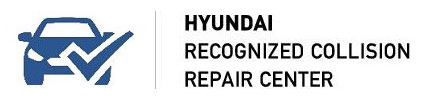
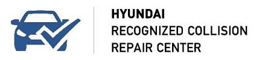

See which of our shops is the most convenient for you.
Find my locationSee which of our shops is the most convenient for you.
Find my locationLegacy Autobody Group is made up of Duncan Autobody, located in Allentown and Quakertown, PA, and Scott’s Collision Centers, located in Easton and Stroudsburg, PA. Our I-Car Gold Class, state-of-the-art facilities have numerous OEM and factory certifications by major automobile manufacturers and this allows us to expertly repair any vehicle. From the highest quality collision repair to repairing the smallest ding or dent, we have the skills and the modern equipment required to achieve a flawless result.
While your vehicle is in our hands, you can rest assured that it will be safe in our secure lots. Our technicians are I-CAR and ASE trained and certified, and our appraisal staff is fully licensed. All of our shops have best-in-class CSI scores consistently exceeding 98%. Because of these measures, our auto body shops guarantee that you will be completely satisfied with our work.
Just a quick call to one of our locations and we will tow your vehicle to our secure lots to begin repairs. Let us take the stress out of having an accident. We will handle everything, from the insurance claims red tape to a perfect repair every time. Make the right decision after a collision, contact Legacy Autobody.


 

Legacy Autobody Group is proud to offer the following services: